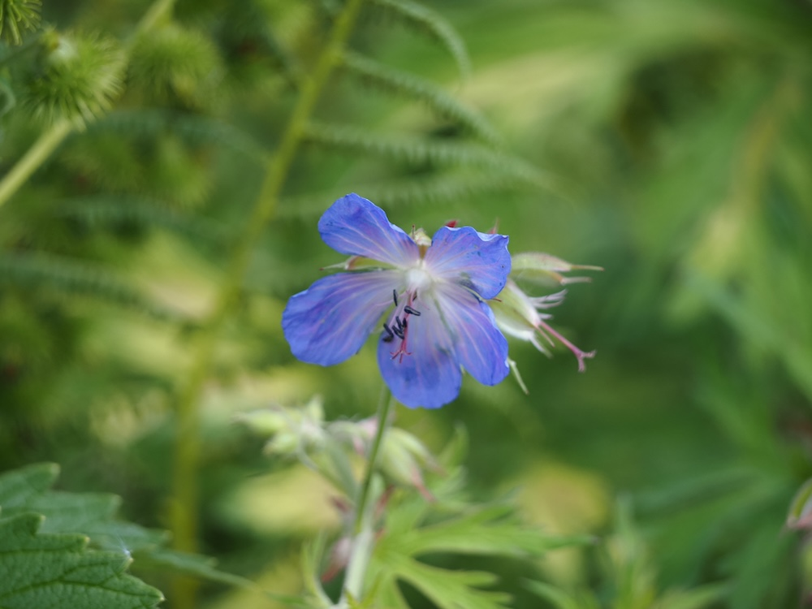
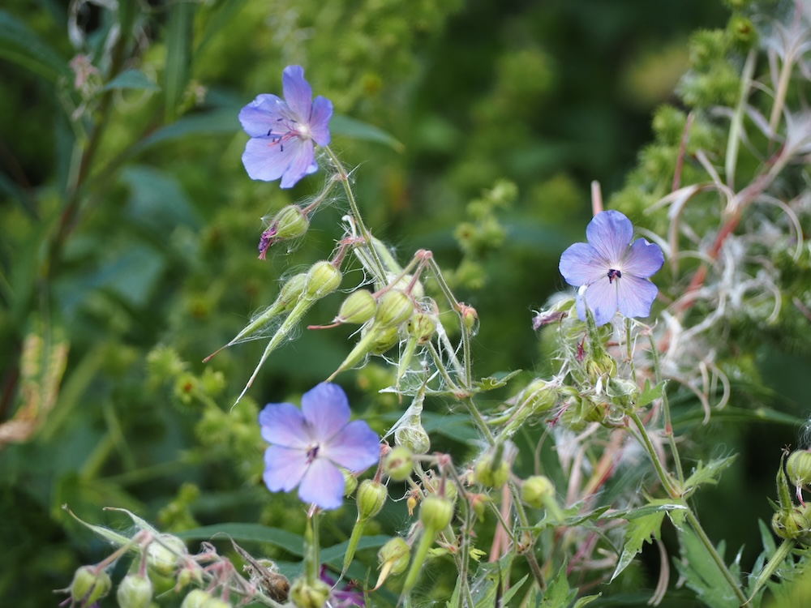

Tiefblaue Schalen über fein gefiedertem Laub – ein Wiesen-Klassiker im Hochsommer.



Die blaueste aller Wiesenblüten
Wenige heimische Wildpflanzen erreichen so ein klares, intensives Blau wie der Wiesen-Storchschnabel. Im Gegenlicht schimmern die fünf Blütenblätter mit dunklen, geradlinigen Adern – eine Optik, die Bestäuber-Insekten direkt zum Nektar leitet. UV-empfindliche Bienenaugen sehen diese Adern noch deutlicher als wir.
Selbstbefruchtung als Notlösung
In jeder Blüte reifen zuerst die Staubblätter, dann erst die Narben – um Selbstbestäubung zu vermeiden. Sollte aber bei schlechtem Wetter kein Bestäuber kommen, krümmen sich die abgewelkten Staubblätter zurück und berühren die Narbe. So sichert sich die Pflanze auch ohne Insekten Samenansatz – ein Plan B für Notfälle.
Wissenswertes & Merksätze
Erkennungszeichen
Tief gefiederte, fast bis zur Mitte zerschlitzte Blätter – fast wie ein Farn. Stängel und Knospen drüsig behaart. Blüten 3–4 cm groß, leuchtend blauviolett mit feinen dunklen Adern.
Spezialist für Fettwiesen
G. pratense liebt nährstoffreiche, mäßig feuchte Wiesen – die klassische „Glatthaferwiese". Bei zu intensiver Mahd verschwindet er rasch. Wo er noch in Beständen wächst, ist die Wiesenpflege traditionell-extensiv.